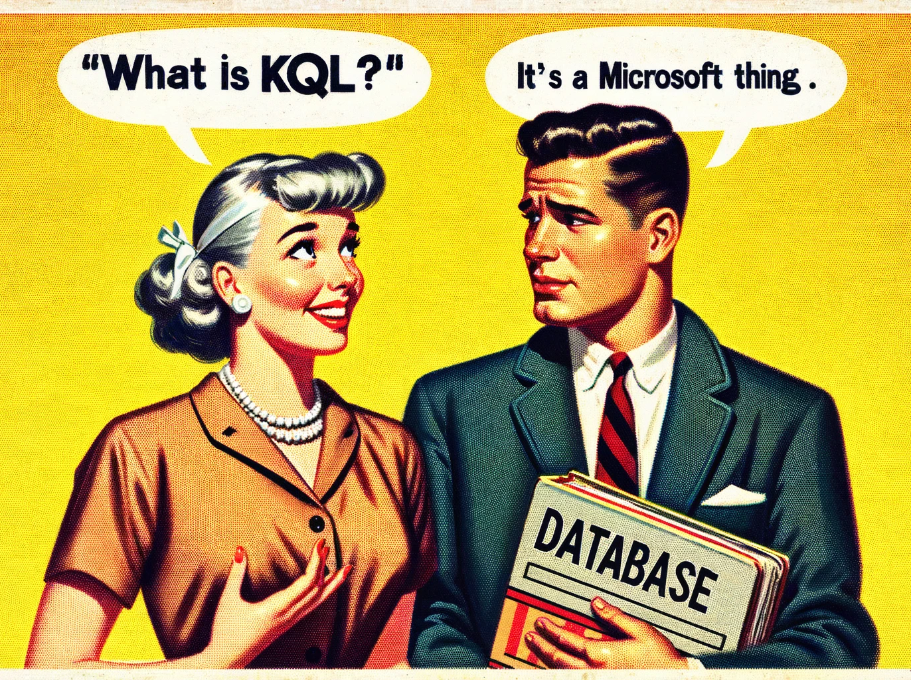
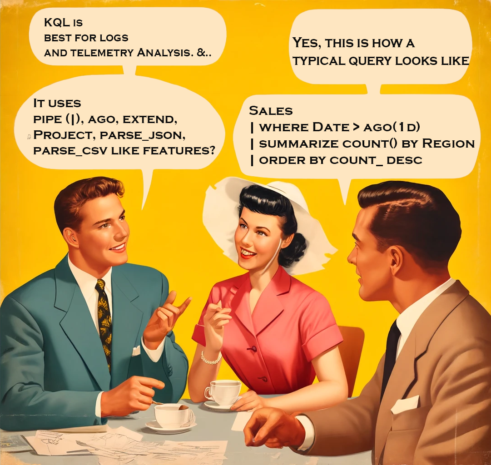

- What is KQL?
- How to run KQL query in Fabric?
- KQL vs SQL Databases
- KQL Vs SQL Query
- KQL Q\&A
- KQL Questions - Keywords
- KQL Quesitons - General
What is KQL?

A KQL (Kusto Query Language) Database handles large volumes of structured, semi-structured, and unstructured data for real-time analytics and ad-hoc querying. It is part of the Azure Data Explorer service. The data in a KQL database is stored in Azure Data Explorer. It uses a columnar storage format, for high-performance.

How to run KQL query in Fabric?

There is no magic command like %%KQL
KQL vs SQL Databases
| Feature | KQL Database | Standard SQL Database |
|---|---|---|
| Query Language | Kusto Query Language (KQL) | Structured Query Language (SQL) |
| Storage Format | Columnar | Row-based |
| Optimized For | Real-time analytics, log and time-series data | Transactional data, relational data |
| Data Structure | Tables, columns, materialized views, functions | Tables, columns, views, stored procedures |
| Scalability | Highly scalable and distributed | Varies by implementation (SQL Server, MySQL, etc.) |
| Indexing | Automatically indexed for fast query performance | Manual and automatic indexing |
| Data Ingestion | Supports batch and streaming ingestion | Primarily batch ingestion |
| Use Cases | Log analytics, telemetry data, IoT data | OLTP, data warehousing, reporting |
| Storage Location | Azure Data Explorer service in the cloud | Varies (on-premises, cloud-based) |
| Performance | Optimized for read-heavy and analytical workloads | Balanced for read and write operations |
| Schema | Flexible schema with support for semi-structured data | Rigid schema with well-defined data types |
KQL Vs SQL Query

KQL vs SQL - DQL
| Operation | SQL | KQL |
|---|---|---|
| Select and Count | SELECT Name, Age, COUNT(*) FROM Employees WHERE Age > 30 GROUP BY Name, Age; |
Employees \| where Age > 30 \| summarize count() by Name, Age |
| Group By and Order By | SELECT Department, AVG(Salary) AS AverageSalary FROM Employees GROUP BY Department ORDER BY AverageSalary DESC; |
Employees \| summarize AverageSalary=avg(Salary) by Department \| sort by AverageSalary desc |
| Join | SELECT e.Name, d.DepartmentName FROM Employees e JOIN Departments d ON e.DepartmentID = d.ID; |
Employees \| join kind=inner (Departments) on $left.DepartmentID == $right.ID \| project Name, DepartmentName |
| Subquery and Limit | SELECT Name FROM (SELECT * FROM Employees WHERE Age > 30) AS SubQuery WHERE DepartmentID = 5 LIMIT 10; |
let SubQuery = Employees \| where Age > 30; SubQuery \| where DepartmentID == 5 \| project Name \| take 10 |
| String Functions | SELECT Name FROM Employees WHERE UPPER(FirstName) = 'JOHN'; |
Employees \| where tolower(FirstName) == 'john' \| project Name |
| Date Functions | SELECT Name FROM Employees WHERE YEAR(HireDate) = 2020; |
Employees \| where datetime_part('year', HireDate) == 2020 \| project Name |
| Between | SELECT * FROM Employees WHERE Age BETWEEN 25 AND 35; |
Employees \| where Age between (25 .. 35) |
| Date Range | SELECT * FROM Sales WHERE SaleDate BETWEEN '2021-01-01' AND '2021-12-31'; |
Sales \| where SaleDate between (datetime(2021-01-01) .. datetime(2021-12-31)) |
| Distinct | SELECT DISTINCT Department FROM Employees; |
Employees \| summarize by Department |
| Top N | SELECT TOP 5 Name, Salary FROM Employees ORDER BY Salary DESC; |
Employees \| top 5 by Salary desc \| project Name, Salary |
| Aggregation with Conditions | SELECT Department, COUNT(*) FROM Employees WHERE Age > 30 GROUP BY Department; |
Employees \| where Age > 30 \| summarize count() by Department |
KQL Vs SQL - DDLs, DMLs & DQLs
| Description | Example | Category |
|---|---|---|
| Tables | ||
| Create a new table | .create table MyTable (Column1: string, Column2: int) |
DDL |
| Show the schema of a table | .show table MyTable schema |
DQL |
| Ingest data into a table | .ingest into table MyTable <DataSource> |
DML |
| Rename a table | .rename table OldTableName to NewTableName |
DDL |
| Drop a table | .drop table TableName |
DDL |
| List all tables | .show tables |
DQL |
| Columns | ||
| Add a column | .alter table TableName add column ColumnName: DataType |
DDL |
| Drop a column | .alter table TableName drop column ColumnName |
DDL |
| Rename a column | .rename column OldColumnName to NewColumnName in table TableName |
DDL |
| Functions | ||
| Create a new function | .create function with (docstring = "Description", folder = "FolderName") MyFunction () { <KQLQuery> } |
DDL |
| Show available functions | .show functions |
DQL |
| Materialized Views | ||
| Create a new materialized view | .create materialized-view MyView on table MyTable { <KQLQuery> } |
DDL |
| Show available materialized views | .show materialized-views |
DQL |
| Indexes | ||
| Create an index | .create index IndexName on TableName (ColumnName) |
DDL |
| Drop an index | .drop index IndexName on TableName |
DDL |
| Show indexes | .show indexes |
DQL |
| Ingest | ||
| Ingest data into a table | .ingest into table MyTable <DataSource> |
DML |
| Ingest data from JSON | .ingest into table TableName h@"https://path/to/file.json" |
DML |
| Database Operations | ||
| Create a database | .create database DatabaseName |
DDL |
| Drop a database | .drop database DatabaseName |
DDL |
| List all databases | .show databases |
DQL |
| Permissions | ||
| Grant table permissions | .grant select on table TableName to UserName |
DDL |
| Revoke table permissions | .revoke select on table TableName from UserName |
DDL |
| Show permissions | .show table TableName policy access |
DQL |
| Views | ||
| Create a view | .create view ViewName as <KQLQuery> |
DDL |
| Drop a view | .drop view ViewName |
DDL |
| Show views | .show views |
DQL |
| Diagnostics | ||
| Show cluster diagnostics | .show cluster diagnostics |
DQL |
| Show table statistics | .show table TableName stats |
DQL |
| Data Export | ||
| Export data to JSON | .export to json at <FilePath> <KQLQuery> |
DML |
KQL Q&A

Highlight the answers to reveal it!
KQL Questions - Keywords
- Which KQL keyword is used to limit the results of a query to a specified number of rows?
- A. select
- B. take
-
C. project
Answer: Take limits the results to a specified number of rows.
-
Which KQL keyword is used to group and aggregate data?
- A. group_by
- B. aggregate
- C. summarize
Answer: Use the summarize keyword to group and aggregate data.
- Which KQL keyword is used to filter rows based on a condition?
- A. where
- B. filter
- C. select
Answer: where is used to filter rows based on a condition.
- Which KQL keyword is used to create a new column or modify an existing column?
- A. create
- B. extend
- C. modify
Answer: extend is used to create a new column or modify an existing column.
- Which KQL keyword is used to sort the results of a query?
- A. order
- B. arrange
- C. sort
Answer: sort is used to order the results of a query.
- Which KQL keyword is used to rename a column in the results?
- A. rename
- B. project-rename
- C. alias
Answer: project-rename is used to rename a column in the results.
- Which KQL keyword is used to join two tables on a common column?
- A. merge
- B. union
- C. join
Answer: join is used to combine two tables on a common column.
- Which KQL keyword is used to calculate the total number of rows in the results?
- A. count
- B. total
- C. sum
Answer: count is used to calculate the total number of rows in the results.
- Which KQL keyword is used to remove duplicates from the results?
- A. distinct
- B. unique
- C. remove-duplicates
Answer: distinct is used to remove duplicate rows from the results.
-
Which KQL keyword is used to extract a substring from a string column?
- A. substring
- B. extract
- C. substr
Answer: substring is used to extract a part of a string column.
-
Which KQL keyword is used to combine the results of two or more queries?
- A. combine
- B. union
- C. join
Answer: union is used to combine the results of two or more queries.
-
Which KQL keyword is used to convert a column to a different data type?
- A. convert
- B. cast
- C. toType
Answer: cast is used to convert a column to a different data type.
-
Which KQL keyword is used to filter rows with null values?
- A. isnull
- B. isnotnull
- C. isnonempty
Answer: isnotnull is used to filter rows with null values.
-
Which KQL keyword is used to calculate the average of a numeric column?
- A. average
- B. mean
- C. avg
Answer: avg is used to calculate the average of a numeric column.
-
Which KQL keyword is used to create a time series chart?
- A. timeseries
- B. render
- C. chart
Answer: render is used to create a time series chart.
-
Which KQL keyword is used to specify the columns to include in the results?
- A. include
- B. select
- C. project
Answer: project is used to specify the columns to include in the results.
-
Which KQL keyword is used to calculate the maximum value of a numeric column?
- A. max
- B. maximum
- C. highest
Answer: max is used to calculate the maximum value of a numeric column.
-
Which KQL keyword is used to calculate the minimum value of a numeric column?
- A. min
- B. minimum
- C. lowest
Answer: min is used to calculate the minimum value of a numeric column.
-
Which KQL keyword is used to convert a datetime column to a specific format?
- A. format
- B. convert
- C. format_datetime
Answer: format_datetime is used to convert a datetime column to a specific format.
-
Which KQL keyword is used to calculate the difference between two datetime columns?
- A. datetime_diff
- B. date_diff
- C. time_diff
Answer: date_diff is used to calculate the difference between two datetime columns.
-
Which KQL keyword is used to filter rows based on a regular expression?
- A. regex_match
- B. matches_regex
- C. search
Answer: matches_regex is used to filter rows based on a regular expression.
-
Which KQL keyword is used to calculate the sum of a numeric column?
- A. sum
- B. total
- C. aggregate_sum
Answer: sum is used to calculate the sum of a numeric column.
-
Which KQL keyword is used to create a new table with the results of a query?
- A. create_table
- B. into
- C. output
Answer: into is used to create a new table with the results of a query.
-
Which KQL keyword is used to parse a string into multiple columns?
- A. split
- B. parse
- C. dissect Answer: parse is used to parse a string into multiple columns.
-
Which KQL keyword is used to join two tables and keep only the rows with matching keys?
- A. inner join
- B. equijoin
- C. join
Answer: join is used to join two tables and keep only the rows with matching keys.
-
Which KQL keyword is used to create an alias for a column in the results?
- A. alias
- B. as
- C. rename
Answer: as is used to create an alias for a column in the results.
-
Which KQL keyword is used to filter rows based on a range of values?
- A. between
- B. in_range
- C. within
Answer: between is used to filter rows based on a range of values.
-
Which KQL keyword is used to concatenate two or more strings?
- A. concat
- B. strcat
- C. joinstr
Answer: strcat is used to concatenate two or more strings.
-
Which KQL keyword is used to extract a portion of a datetime value?
- A. extract
- B. datetime_part
- C. datetime_extract
Answer: extract is used to extract a portion of a datetime value.
-
Which KQL keyword is used to find the median of a numeric column?
- A. median
- B. percentile
- C. mid
Answer: percentile is used to find the median of a numeric column (percentile 50).
-
Which KQL keyword is used to return a specified number of rows from the start of the results?
- A. top
- B. limit
- C. head
Answer: head is used to return a specified number of rows from the start of the results.
-
Which KQL keyword is used to combine multiple conditions in a query?
- A. combine
- B. and
- C. both
Answer: and is used to combine multiple conditions in a query.
-
Which KQL keyword is used to calculate the standard deviation of a numeric column?
- A. stddev
- B. stdev
- C. sd
Answer: stdev is used to calculate the standard deviation of a numeric column.
-
Which KQL keyword is used to return rows where a column value is within a list of values?
- A. in
- B. within
- C. includes
Answer: in is used to return rows where a column value is within a list of values.
-
Which KQL keyword is used to calculate the variance of a numeric column?
- A. variance
- B. var
- C. varp
Answer: var is used to calculate the variance of a numeric column.
-
Which KQL keyword is used to format a string column?
- A. format
- B. str_format
- C. tostring
Answer: tostring is used to format a string column.
-
Which KQL keyword is used to pivot a table?
- A. pivot
- B. transform
- C. make-series
Answer: make-series is used to pivot a table.
-
Which KQL keyword is used to calculate the cumulative sum of a numeric column?
- A. cumulative_sum
- B. sum
- C. running_sum
Answer: cumulative_sum is used to calculate the cumulative sum of a numeric column.
-
Which KQL keyword is used to create a histogram of a numeric column?
- A. histogram
- B. bin
- C. bucket
Answer: bin is used to create a histogram of a numeric column.
-
Which KQL keyword is used to evaluate a condition and return one of two values?
- A. if
- B. case
- C. switch
Answer: if is used to evaluate a condition and return one of two values.
KQL Quesitons - General
- You have a table
Saleswith columnsProductID,Quantity, andPrice. How would you calculate the total revenue for each product? - A.
Sales | summarize TotalRevenue = sum(Quantity * Price) by ProductID - B.
Sales | summarize TotalRevenue = avg(Quantity * Price) by ProductID - C.
Sales | extend TotalRevenue = Quantity * Price | summarize Total = sum(TotalRevenue) by ProductID
Answer: Sales | summarize TotalRevenue = sum(Quantity *</span> Price) by ProductID
- How would you find all records in the
Logstable where theMessagecolumn contains the word "error"? - A.
Logs | where Message contains "error" - B.
Logs | where Message == "error" -
C.
Logs | search "error"Answer:Logs | where Message contains "error" -
What function would you use to calculate the moving average of a column in KQL?
- A.
moving_avg() - B.
series_fir() - C.
avg()
Answer: series_fir() is used to calculate the moving average.
- How do you join two tables
Table1andTable2on theIDcolumn, keeping all records fromTable1? - A.
Table1 | innerjoin (Table2) on ID - B.
Table1 | join kind=inner (Table2) on ID - C.
Table1 | join kind=leftouter (Table2) on ID
Answer: Table1 | join kind=leftouter (Table2) on ID
- How can you create a histogram of the
Agecolumn in theUserstable? - A.
Users | histogram Age by 10 - B.
Users | summarize count() by Age - C.
Users | summarize count() by bin(Age, 10)
Answer: Users | summarize count() by bin(Age, 10)
- You need to extract the year from a
datetimecolumn calledTimestampin theEventstable. Which function would you use? - A.
year(Timestamp) - B.
extract_year(Timestamp) - C.
datetime_part('year', Timestamp)
Answer: year(Timestamp)
- How would you filter rows in the
Salestable to only include those where theDateis within the last 30 days? - A.
Sales | where Date > ago(30d) - B.
Sales | where Date between (now() - 30d) and now() - C.
Sales | where Date > datetime(30 days ago)
Answer: Sales | where Date > ago(30d)
- How do you rename the column
OldNametoNewNamein a KQL query? - A.
| project-rename NewName = OldName - B.
| rename OldName to NewName - C.
| project OldName as NewName
Answer: | project OldName as NewName
- Which KQL function would you use to concatenate the values of two columns
FirstNameandLastNamein theEmployeestable? - A.
concat(FirstName, LastName) - B.
strcat(FirstName, " ", LastName) - C.
combine(FirstName, LastName)
Answer: strcat(FirstName, " ", LastName)
-
In the
Orderstable, how would you calculate the average order value?- A.
Orders | summarize avg(OrderValue) - B.
Orders | summarize AverageOrder = mean(OrderValue) - C.
Orders | summarize AverageOrder = avg(OrderValue)
Answer:
Orders | summarize AverageOrder = avg(OrderValue) - A.
-
How can you list the unique values of the
Countrycolumn from theCustomerstable?- A.
Customers | distinct Country - B.
Customers | summarize by Country - C.
Customers | unique Country
Answer:
Customers | distinct Country - A.
-
What is the correct way to calculate the total number of orders in the
Orderstable?- A.
Orders | summarize count() - B.
Orders | count() - C.
Orders | summarize total_orders = count()
Answer:
Orders | summarize total_orders = count() - A.
-
How would you convert the
Pricecolumn in theProductstable from a string to a real number?- A.
Products | project Price = toreal(Price) - B.
Products | extend Price = todouble(Price) - C.
Products | cast(Price as real)
Answer:
Products | project Price = toreal(Price) - A.
-
You want to visualize the
Salestable's total revenue over time using a line chart. Which render statement should you use?- A.
| render linechart - B.
| render timechart - C.
| render barchart
Answer:
| render linechart - A.
-
How can you combine the results of two queries in KQL?
- A.
combine - B.
union - C.
join
Answer:
union - A.
-
In KQL, how do you create a new column that shows the length of the
Descriptioncolumn in theProductstable?- A.
Products | extend Length = len(Description) - B.
Products | project Length = strlen(Description) - C.
Products | project Length = length(Description)
Answer:
Products | project Length = strlen(Description) - A.
-
How would you find the earliest
OrderDatein theOrderstable?- A.
Orders | summarize EarliestDate = min(OrderDate) - B.
Orders | summarize EarliestDate = earliest(OrderDate) - C.
Orders | summarize EarliestDate = first(OrderDate)
Answer:
Orders | summarize EarliestDate = min(OrderDate) - A.
-
Which KQL keyword is used to combine two tables side by side, based on a common column?
- A.
merge - B.
union - C.
join
Answer:
join - A.
-
How would you calculate the median value of the
Incomecolumn in theEmployeestable?- A.
Employees | summarize median(Income) - B.
Employees | summarize Percentile_50 = percentile(Income, 50) - C.
Employees | summarize MedianIncome = median(Income)
Answer:
Employees | summarize Percentile_50 = percentile(Income, 50) - A.
-
How can you filter the
Eventstable to show only records where theStatuscolumn is either "Active" or "Pending"?- A.
Events | where Status in ("Active", "Pending") - B.
Events | where Status == "Active" or Status == "Pending" - C.
Events | where Status matches ("Active", "Pending")
Answer:
Events | where Status in ("Active", "Pending") - A.
-
How would you list the top 5 products by total sales in the
Salestable?- A.
Sales | top 5 by sum(TotalSales) - B.
Sales | summarize TotalSales = sum(SalesAmount) by ProductID | top 5 by TotalSales - C.
Sales | summarize TotalSales = sum(SalesAmount) by ProductID | limit 5 by TotalSales
Answer:
Sales | summarize TotalSales = sum(SalesAmount) by ProductID | top 5 by TotalSales - A.
-
Which function in KQL would you use to format a datetime value as a string?
- A.
format_datetime() - B.
datetime_to_string() - C.
tostring()
Answer:
format_datetime() - A.
-
How can you find the number of unique customers in the
Salestable?- A.
Sales | summarize UniqueCustomers = dcount(CustomerID) - B.
Sales | summarize UniqueCustomers = countdistinct(CustomerID) - C.
Sales | summarize UniqueCustomers = unique(CustomerID)
Answer:
Sales | summarize UniqueCustomers = dcount(CustomerID) - A.
-
Which KQL function would you use to convert a string to a datetime value?
- A.
todatetime() - B.
string_to_datetime() - C.
datetime()
Answer:
todatetime() - A.
-
How can you calculate the standard deviation of the
Pricecolumn in theProductstable?- A.
Products | summarize StdDevPrice = stdev(Price) - B.
Products | summarize StdDevPrice = stddev(Price) - C.
Products | summarize StdDevPrice = variance(Price)
Answer:
Products | summarize StdDevPrice = stddev(Price) - A.
-
Which KQL function is used to round a numeric value to the nearest integer?
- A.
round() - B.
truncate() - C.
ceil()
Answer:
round() - A.
-
How would you extract the day of the week from a datetime column
OrderDatein theOrderstable?- A.
Orders | extend DayOfWeek = dayofweek(OrderDate) - B.
Orders | extend DayOfWeek = extract('dow', OrderDate) - C.
Orders | extend DayOfWeek = day(OrderDate)
Answer:
Orders | extend DayOfWeek = dayofweek(OrderDate) - A.
-
Which function in KQL can be used to split a string into an array based on a delimiter?
- A.
split() - B.
string_split() - C.
explode()
Answer:
split() - A.
-
How would you calculate the cumulative sum of the
SalesAmountcolumn in theSalestable?- A.
Sales | extend CumulativeSales = sum(SalesAmount) - B.
Sales | extend CumulativeSales = running_sum(SalesAmount) - C.
Sales | extend CumulativeSales = cumulative_sum(SalesAmount
Answer:
Sales | extend CumulativeSales = cumulative_sum(SalesAmount) - A.
-
How do you find all records in the
Logstable where theSeveritycolumn is either "Error" or "Warning"?- A.
Logs | where Severity == "Error" or Severity == "Warning" - B.
Logs | where Severity in ("Error", "Warning") - C.
Logs | where Severity matches ("Error", "Warning")
Answer:
Logs | where Severity in ("Error", "Warning") - A.
-
Which KQL function would you use to get the current date and time?
- A.
now() - B.
current_datetime() - C.
getdate()
Answer:
now() - A.
-
How would you calculate the number of days between two datetime columns
StartDateandEndDatein theProjectstable?- A.
Projects | extend DaysBetween = date_diff('day', EndDate, StartDate) - B.
Projects | extend DaysBetween = datetime_diff('day', EndDate, StartDate) - C.
Projects | extend DaysBetween = day_diff(EndDate, StartDate
Answer:
Projects | extend DaysBetween = date_diff('day', EndDate, StartDate) - A.
-
Which function would you use to get the maximum value of a column
Pricein theProductstable?- A.
Products | summarize MaxPrice = max(Price) - B.
Products | summarize MaxPrice = maximum(Price) - C.
Products | summarize MaxPrice = greatest(Price)
Answer:
Products | summarize MaxPrice = max(Price) - A.
-
How can you filter the
Eventstable to show records where theEventDateis in the current year?- A.
Events | where year(EventDate) == year(now()) - B.
Events | where EventDate >= startofyear(now()) - C.
Events | where EventDate between (startofyear(now()) .. endofyear(now()))
Answer:
Events | where year(EventDate) == year(now()) - A.
-
How would you rename the
OldColumntoNewColumnin theDatatable?- A.
Data | project NewColumn = OldColumn - B.
Data | rename OldColumn as NewColumn - C.
Data | project-rename NewColumn = OldColumn
Answer:
Data | project-rename NewColumn = OldColumn - A.
-
Which function in KQL is used to get the number of elements in an array?
- A.
count() - B.
length() - C.
array_length()
Answer:
length() - A.
-
How would you calculate the average
Salaryfor each department in theEmployeestable?- A.
Employees | summarize AvgSalary = avg(Salary) by Department - B.
Employees | summarize AvgSalary = mean(Salary) by Department - C.
Employees | summarize AvgSalary = average(Salary) by Department
Answer:
Employees | summarize AvgSalary = avg(Salary) by Department - A.
-
How can you convert the
Pricecolumn in theProductstable from a string to a real number?- A.
Products | project Price = toreal(Price) - B.
Products | extend Price = todouble(Price) - C.
Products | cast(Price as real)
Answer:
Products | project Price = toreal(Price) - A.
-
Which function would you use to extract the hour from a datetime column
EventTimein theEventstable?- A.
Events | extend Hour = hour(EventTime) - B.
Events | extend Hour = extract('hour', EventTime) - C.
Events | extend Hour = gethour(EventTime)
Answer:
Events | extend Hour = hour(EventTime) - A.
-
How can you create a column
FullNameby concatenatingFirstNameandLastNamein theEmployeestable?- A.
Employees | extend FullName = FirstName + " " + LastName - B.
Employees | extend FullName = strcat(FirstName, " ", LastName) - C.
Employees | extend FullName = concat(FirstName, " ", LastName)
Answer:
Employees | extend FullName = strcat(FirstName, " ", LastName) - A.
-
How would you calculate the 90th percentile of the
ResponseTimecolumn in theRequeststable?- A.
Requests | summarize Percentile_90 = percentile(ResponseTime, 90) - B.
Requests | summarize Percentile_90 = p90(ResponseTime) - C.
Requests | summarize Percentile_90 = percentile_approx(ResponseTime, 0.90)
Answer:
Requests | summarize Percentile_90 = percentile(ResponseTime, 90) - A.
-
Which function in KQL would you use to replace all occurrences of a substring in a string column?
- A.
replace() - B.
str_replace() - C.
substitute()
Answer:
replace() - A.
-
How can you find the maximum value of the
Scorecolumn in theResultstable?- A.
Results | summarize MaxScore = max(Score) - B.
Results | summarize MaxScore = maximum(Score) - C.
Results | summarize MaxScore = highest(Score)
Answer:
Results | summarize MaxScore = max(Score) - A.
-
How would you create a new column
Monthby extracting the month from theOrderDatecolumn in theSalestable?- A.
Sales | extend Month = extract('month', OrderDate) - B.
Sales | extend Month = month(OrderDate) - C.
Sales | extend Month = getmonth(OrderDate)
Answer:
Sales | extend Month = month(OrderDate) - A.
-
How do you calculate the variance of the
Durationcolumn in theSessionstable?- A.
Sessions | summarize VarDuration = variance(Duration) - B.
Sessions | summarize VarDuration = var(Duration) - C.
Sessions | summarize VarDuration = varp(Duration)
Answer:
Sessions | summarize VarDuration = var(Duration) - A.
-
Which KQL function would you use to count the number of non-null values in a column?
- A.
count() - B.
countif() - C.
count_not_null()
Answer:
countif() - A.
-
How can you filter the
Orderstable to show only records where theTotalAmountis greater than 100?- A.
Orders | where TotalAmount > 100 - B.
Orders | filter TotalAmount > 100 - C.
Orders | find TotalAmount > 100
Answer:
Orders | where TotalAmount > 100 - A.
-
How would you create a new column
Yearby extracting the year from thePurchaseDatecolumn in thePurchasestable?- A.
Purchases | extend Year = year(PurchaseDate) - B.
Purchases | extend Year = extract('year', PurchaseDate) - C.
Purchases | extend Year = getyear(PurchaseDate)
Answer:
Purchases | extend Year = year(PurchaseDate) - A.
-
Which function in KQL would you use to get the number of elements in an array?
- A.
count() - B.
length() - C.
array_length()
Answer:
length() - A.
-
How do you calculate the sum of the
SalesAmountcolumn in theSalestable?- A.
Sales | summarize TotalSales = sum(SalesAmount) - B.
Sales | summarize TotalSales = adds(SalesAmount) - C.
Sales | summarize TotalSales = cumulative_sum(SalesAmount)
Answer:
Sales | summarize TotalSales = sum(SalesAmount) - A.
-
How can you find the earliest
StartDatein theProjectstable?- A.
Projects | summarize EarliestStart = earliest(StartDate) - B.
Projects | summarize EarliestStart = min(StartDate) - C.
Projects | summarize EarliestStart = first(StartDate)
Answer:
Projects | summarize EarliestStart = min(StartDate) - A.
-
Which KQL function is used to get the current date and time?
- A.
now() - B.
current_datetime() - C.
getdate()
Answer:
now() - A.
-
How would you calculate the difference in months between two datetime columns
StartDateandEndDatein theTaskstable?- A.
Tasks | extend MonthsBetween = date_diff('month', EndDate, StartDate) - B.
Tasks | extend MonthsBetween = datetime_diff('month', EndDate, StartDate) - C.
Tasks | extend MonthsBetween = month_diff(EndDate, StartDate)
Answer:
Tasks | extend MonthsBetween = date_diff('month', EndDate, StartDate) - A.
-
Which function in KQL would you use to get the sum of a column
Amountin theTransactionstable?- A.
Transactions | summarize TotalAmount = sum(Amount) - B.
Transactions | summarize TotalAmount = sum_amount(Amount) - C.
Transactions | summarize TotalAmount = sum(Amount)
Answer:
Transactions | summarize TotalAmount = sum(Amount) - A.
-
How can you filter the
Logstable to show only records where theLevelcolumn is "Error"?- A.
Logs | where Level == "Error" - B.
Logs | where Level equals "Error" - C.
Logs | filter Level == "Error"
Answer:
Logs | where Level == "Error" - A.
-
How would you rename the
OldColumntoNewColumnin theDatatable?- A.
Data | project NewColumn = OldColumn - B.
Data | rename OldColumn as NewColumn - C.
Data | project-rename NewColumn = OldColumn
Answer:
Data | project-rename NewColumn = OldColumn - A.
-
Which function in KQL is used to count the number of elements in an array?
- A.
count() - B.
length() - C.
array_length()
Answer:
length() - A.
-
How would you calculate the average
Pricefor each product in theProductstable?- A.
Products | summarize AvgPrice = avg(Price) by ProductID - B.
Products | summarize AvgPrice = mean(Price) by ProductID - C.
Products | summarize AvgPrice = average(Price) by ProductID
Answer:
Products | summarize AvgPrice = avg(Price) by ProductID - A.
-
How can you convert the
Revenuecolumn in theSalestable from a string to a real number?- A.
Sales | project Revenue = toreal(Revenue) - B.
Sales | extend Revenue = todouble(Revenue) - C.
Sales | cast(Revenue as real)
Answer:
Sales | project Revenue = toreal(Revenue) - A.
-
Which function would you use to extract the minute from a datetime column
EventTimein theEventstable?- A.
Events | extend Minute = minute(EventTime) - B.
Events | extend Minute = extract('minute', EventTime) - C.
Events | extend Minute = getminute(EventTime)
Answer:
Events | extend Minute = minute(EventTime) - A.
-
How can you create a column
FullAddressby concatenatingStreet,City, andZipCodein theAddressestable?- A.
Addresses | extend FullAddress = strcat(Street, ", ", City, ", ", ZipCode) - B.
Addresses | extend FullAddress = concat(Street, ", ", City, ", ", ZipCode) - C.
Addresses | extend FullAddress = Street + ", " + City + ", " + ZipCode
Answer:
Addresses | extend FullAddress = strcat(Street, ", ", City, ", ", ZipCode) - A.
-
How would you calculate the 95th percentile of the
LoadTimecolumn in theWebRequeststable?- A.
WebRequests | summarize Percentile_95 = percentile(LoadTime, 95) - B.
WebRequests | summarize Percentile_95 = p95(LoadTime) - C.
WebRequests | summarize Percentile_95 = percentile_approx(LoadTime, 0.95)
Answer:
WebRequests | summarize Percentile_95 = percentile(LoadTime, 95) - A.
-
Which function in KQL would you use to replace all occurrences of a substring in a string column?
- A.
replace() - B.
str_replace() - C.
substitute()
Answer:
replace() - A.
-
How can you find the maximum value of the
Salarycolumn in theEmployeestable?- A.
Employees | summarize MaxSalary = max(Salary) - B.
Employees | summarize MaxSalary = maximum(Salary) - C.
Employees | summarize MaxSalary = highest(Salary)
Answer:
Employees | summarize MaxSalary = max(Salary) - A.
-
How would you create a new column
Quarterby extracting the quarter from theOrderDatecolumn in theOrderstable?- A.
Orders | extend Quarter = extract('quarter', OrderDate) - B.
Orders | extend Quarter = quarter(OrderDate) - C.
Orders | extend Quarter = getquarter(OrderDate)
Answer:
Orders | extend Quarter = quarter(OrderDate) - A.
-
How do you calculate the variance of the
ProcessingTimecolumn in theTransactionstable?- A.
Transactions | summarize VarProcessingTime = variance(ProcessingTime) - B.
Transactions | summarize VarProcessingTime = var(ProcessingTime) - C.
Transactions | summarize VarProcessingTime = varp(ProcessingTime)
Answer:
Transactions | summarize VarProcessingTime = var(ProcessingTime) - A.
-
Which KQL function would you use to count the number of non-null values in a column?
- A.
count() - B.
countif() - C.
count_not_null()
Answer:
countif() - A.
-
How can you filter the
Invoicestable to show only records where theTotalis greater than 500?- A.
Invoices | where Total > 500 - B.
Invoices | filter Total > 500 - C.
Invoices | find Total > 500
Answer:
Invoices | where Total > 500 - A.
-
How would you create a new column
Yearby extracting the year from theDatecolumn in theEventstable?- A.
Events | extend Year = year(Date) - B.
Events | extend Year = extract('year', Date) - C.
Events | extend Year = getyear(Date)
Answer:
Events | extend Year = year(Date) - A.
-
Which function in KQL would you use to get the sum of a column
Amountin thePaymentstable?- A.
Payments | summarize TotalAmount = sum(Amount) - B.
Payments | summarize TotalAmount = sum_amount(Amount) - C.
Payments | summarize TotalAmount = adds(Amount)
Answer:
Payments | summarize TotalAmount = sum(Amount) - A.
-
How can you find the earliest
HireDatein theEmployeestable?- A.
Employees | summarize EarliestHire = earliest(HireDate) - B.
Employees | summarize EarliestHire = min(HireDate) - C.
Employees | summarize EarliestHire = first(HireDate)
Answer:
Employees | summarize EarliestHire = min(HireDate) - A.
-
How would you calculate the difference in days between two datetime columns
StartDateandEndDatein theProjectstable?- A.
Projects | extend DaysBetween = date_diff('day', EndDate, StartDate) - B.
Projects | extend DaysBetween = datetime_diff('day', EndDate, StartDate) - C.
Projects | extend DaysBetween = day_diff(EndDate, StartDate
Answer:
Projects | extend DaysBetween = date_diff('day', EndDate, StartDate) - A.
-
How can you find the latest
EndDatein theTaskstable?- A.
Tasks | summarize LatestEnd = latest(EndDate) - B.
Tasks | summarize LatestEnd = max(EndDate) - C.
Tasks | summarize LatestEnd = last(EndDate)
Answer:
Tasks | summarize LatestEnd = max(EndDate) - A.
-
Which function in KQL would you use to concatenate multiple string columns in the
Productstable?- A.
Products | extend FullDescription = concat(Description, " - ", Category) - B.
Products | extend FullDescription = strcat(Description, " - ", Category) - C.
Products | extend FullDescription = joinstr(Description, " - ", Category)
Answer:
Products | extend FullDescription = strcat(Description, " - ", Category) - A.
-
How can you calculate the total number of orders in the
Orderstable?- A.
Orders | summarize TotalOrders = count() - B.
Orders | count() - C.
Orders | summarize TotalOrders = count(OrderID)
Answer:
Orders | summarize TotalOrders = count() - A.
-
How would you find all records in the
Errorstable where theMessagecolumn contains the word "timeout"?- A.
Errors | where Message contains "timeout" - B.
Errors | where Message == "timeout" - C.
Errors | search "timeout"
Answer:
Errors | where Message contains "timeout" - A.
-
How would you list the unique values of the
Statuscolumn from theTaskstable?- A.
Tasks | distinct Status - B.
Tasks | summarize by Status - C.
Tasks | unique Status
Answer:
Tasks | distinct Status - A.
-
How can you calculate the average
ResponseTimefor each URL in theWebRequeststable?- A.
WebRequests | summarize AvgResponseTime = avg(ResponseTime) by URL - B.
WebRequests | summarize AvgResponseTime = mean(ResponseTime) by URL - C.
WebRequests | summarize AvgResponseTime = average(ResponseTime) by URL
Answer:
WebRequests | summarize AvgResponseTime = avg(ResponseTime) by URL - A.
-
How would you calculate the cumulative sum of the
Revenuecolumn in theSalestable?- A.
Sales | extend CumulativeRevenue = sum(Revenue) - B.
Sales | extend CumulativeRevenue = running_sum(Revenue) - C.
Sales | extend CumulativeRevenue = cumulative_sum(Revenue)
Answer:
Sales | extend CumulativeRevenue = cumulative_sum(Revenue) - A.
-
Which function in KQL would you use to get the maximum value of a column
Valuein theMetricstable?- A.
Metrics | summarize MaxValue = max(Value) - B.
Metrics | summarize MaxValue = maximum(Value) - C.
Metrics | summarize MaxValue = greatest(Value)
Answer:
Metrics | summarize MaxValue = max(Value) - A.
-
How can you filter the
Activitiestable to show only records where theActivityDateis in the current month?- A.
Activities | where month(ActivityDate) == month(now()) - B.
Activities | where ActivityDate >= startofmonth(now()) - C.
Activities | where ActivityDate between (startofmonth(now()) .. endofmonth(now()))
Answer:
Activities | where month(ActivityDate) == month(now()) - A.
-
Which function in KQL is used to split a string into an array based on a delimiter?
- A.
split() - B.
string_split() - C.
explode()
Answer:
split() - A.
-
How would you calculate the 75th percentile of the
ProcessingTimecolumn in theOperationstable?- A.
Operations | summarize Percentile_75 = percentile(ProcessingTime, 75) - B.
Operations | summarize Percentile_75 = p75(ProcessingTime) - C.
Operations | summarize Percentile_75 = percentile_approx(ProcessingTime, 0.75)
Answer:
Operations | summarize Percentile_75 = percentile(ProcessingTime, 75) - A.
-
How would you calculate the median value of the
Incomecolumn in theEmployeestable?- A.
Employees | summarize MedianIncome = median(Income) - B.
Employees | summarize MedianIncome = percentile(Income, 50) - C.
Employees | summarize MedianIncome = avg(Income)
Answer:
Employees | summarize MedianIncome = percentile(Income, 50) - A.
-
How can you list the unique values of the
Categorycolumn from theProductstable?- A.
Products | distinct Category - B.
Products | summarize by Category - C.
Products | unique Category
Answer:
Products | distinct Category - A.
-
Which function in KQL is used to format a datetime value as a string?
- A.
format_datetime() - B.
datetime_to_string() - C.
tostring()
Answer:
format_datetime() - A.
-
How can you create a new column
Monthby extracting the month from theTimestampcolumn in theEventstable?- A.
Events | extend Month = extract('month', Timestamp) - B.
Events | extend Month = month(Timestamp) - C.
Events | extend Month = getmonth(Timestamp)
Answer:
Events | extend Month = month(Timestamp) - A.
-
How do you filter the
Orderstable to include only those where theOrderDateis within the last 7 days?- A.
Orders | where OrderDate > ago(7d) - B.
Orders | where OrderDate >= startofweek(now()) - C.
Orders | where OrderDate between (now() - 7d) and now()
Answer:
Orders | where OrderDate > ago(7d) - A.
-
How would you extract the year from a
datetimecolumn calledTimestampin theLogstable?- A.
Logs | extend Year = year(Timestamp) - B.
Logs | extend Year = extract('year', Timestamp) - C.
Logs | extend Year = getyear(Timestamp)
Answer:
Logs | extend Year = year(Timestamp) - A.
-
How would you rename the column
OldNametoNewNamein a KQL query?- A.
| project-rename NewName = OldName - B.
| rename OldName to NewName - C.
| project OldName as NewName
Answer:
| project OldName as NewName - A.
-
Which function in KQL would you use to get the current date and time?
- A.
now() - B.
current_datetime() - C.
getdate()
Answer:
now() - A.
-
How can you create a column
FullNameby concatenatingFirstNameandLastNamein theEmployeestable?- A.
Employees | extend FullName = FirstName + " " + LastName - B.
Employees | extend FullName = strcat(FirstName, " ", LastName) - C.
Employees | extend FullName = concat(FirstName, " ", LastName)
Answer:
Employees | extend FullName = strcat(FirstName, " ", LastName) - A.
-
How would you find all records in the
Logstable where theMessagecolumn contains the word "error"?- A.
Logs | where Message contains "error" - B.
Logs | where Message == "error" - C.
Logs | search "error"
Answer:
Logs | where Message contains "error" - A.
-
Which KQL function would you use to convert a string to a datetime value?
- A.
todatetime() - B.
string_to_datetime() - C.
datetime()
Answer:
todatetime() - A.
-
How would you filter rows in the
Salestable to only include those where theDateis within the last 30 days?- A.
Sales | where Date > ago(30d) - B.
Sales | where Date between (now() - 30d) and now() - C.
Sales | where Date > datetime(30 days ago)
Answer:
Sales | where Date > ago(30d) - A.
-
How do you join two tables
Table1andTable2on theIDcolumn, keeping all records fromTable1?- A.
Table1 | innerjoin (Table2) on ID - B.
Table1 | join kind=inner (Table2) on ID - C.
Table1 | join kind=leftouter (Table2) on IDAnswer:Table1 | join kind=leftouter (Table2) on ID
- A.
-
How would you list the top 10 products by total sales in the
Salestable?- A.
Sales | top 10 by sum(TotalSales) - B.
Sales | summarize TotalSales = sum(SalesAmount) by ProductID | top 10 by TotalSales - C.
Sales | summarize TotalSales = sum(SalesAmount) by ProductID | limit 10 by TotalSales
Answer:
Sales | summarize TotalSales = sum(SalesAmount) by ProductID | top 10 by TotalSales - A.
-
How would you create a time series chart for the
Salestable's total revenue over time?- A.
Sales | summarize TotalRevenue = sum(Revenue) by bin(Time, 1h) | render timechart - B.
Sales | summarize TotalRevenue = sum(Revenue) by bin(Time, 1h) | render linechart - C.
Sales | summarize TotalRevenue = sum(Revenue) by bin(Time, 1h) | render barchart
Answer:
Sales | summarize TotalRevenue = sum(Revenue) by bin(Time, 1h) | render linechart - A.
-
How can you calculate the total number of distinct customers in the
Salestable?- A.
Sales | summarize DistinctCustomers = dcount(CustomerID) - B.
Sales | summarize DistinctCustomers = countdistinct(CustomerID) - C.
Sales | summarize DistinctCustomers = unique(CustomerID)
Answer:
Sales | summarize DistinctCustomers = dcount(CustomerID) - A.
-
How can you concatenate the values of two columns
FirstNameandLastNamein theContactstable?- A.
Contacts | extend FullName = strcat(FirstName, " ", LastName) - B.
Contacts | extend FullName = concat(FirstName, " ", LastName) - C.
Contacts | extend FullName = joinstr(FirstName, " ", LastName)
Answer:
Contacts | extend FullName = strcat(FirstName, " ", LastName) - A.